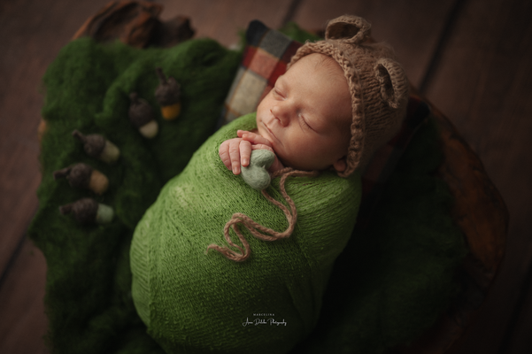

NEUGEBORENENFOTOGRAFIE
Was tun, wenn das Baby viel schreit?
Warum auch unruhige Babys während einer liebevoll begleiteten Session zur Ruhe finden können.

Viele Eltern fragen mich vor dem Neugeborenenshooting: „Und was ist, wenn unser Baby viel weint oder ein typisches Schreibaby ist?“
Diese Sorge kenne ich sehr gut – auch ich hatte ein Baby, das viel geschrien hat. Und trotzdem entsteht während der Session eine ganz besondere, ruhige Atmosphäre.
Wärme, Ruhe und Geborgenheit
In meinem Studio stehen Wärme, Ruhe und Geborgenheit an erster Stelle.
Sanfte Wickeltechniken, beruhigende Einschlafmethoden und ein klar strukturierter Ablauf helfen auch sehr unruhigen Babys, zur Ruhe zu kommen.
Unterstützend nutze ich – ganz dezent – einen Diffuser mit ätherischen Ölen, der eine entspannte Atmosphäre schafft.
Die Vorbereitung spielt eine wichtige Rolle
Ein weiterer wichtiger Punkt ist die Vorbereitung der Eltern.
Wenn ihr meine Hinweise zu Fütterung, Kleidung und Tagesrhythmus berücksichtigt, schafft ihr die besten Voraussetzungen für eine entspannte Session.
So entsteht ein sicherer Raum, in dem euer Baby loslassen, entspannen und einschlafen darf.
Erfahrung macht den Unterschied
Jedes Baby ist einzigartig. Manche Neugeborene schlafen bereits nach wenigen Minuten ein, andere benötigen deutlich mehr Zeit und Nähe.
Deshalb plane ich ausreichend Zeit ein und arbeite niemals unter Druck.
Das Wohlbefinden eures Babys steht immer an erster Stelle.
Auch Schreibabys dürfen zur Ruhe kommen
Ja – selbst sogenannte Schreibabys finden während des Shootings oft ihren Frieden.
Mit eurer Ruhe, einer angenehmen Umgebung und meiner Erfahrung entsteht häufig eine kleine Magie, die Eltern immer wieder überrascht.
Genau in diesen ruhigen Momenten entstehen die Bilder, die euch ein Leben lang begleiten werden.
Habt ihr Sorgen wegen eines unruhigen Babys?
Schreibt mir gerne. Gemeinsam finden wir den passenden Zeitpunkt und schaffen die besten Voraussetzungen für eine entspannte und liebevolle Fotosession.